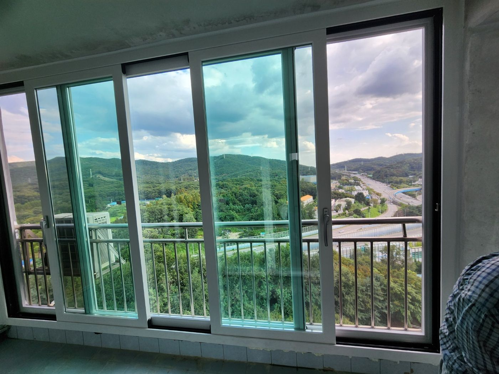

KCC 창호 공식 대리점 · 오산 · 화성
오래된 샷시,
공장에서 직접 만든
새 창으로 바꿔요
화성 정남 공장에서 우리 집 치수에 맞춰 만들고,
만든 팀이 그대로 와서 시공해요. 실측과 견적은 무료예요.
전화가 편하시면 바로 걸어주세요. 대표가 직접 받아요.

- KCC 창호 공식 대리점정품 창호 · 정품 유리
- 화성 정남 직영 공장집 치수에 맞춰 직접 제작
- 제작 · 시공 · A/S 직접중간 업체 없이 한 곳에서
- 대표 정대남사업자 124-44-15365
최근 시공 현장
사진은 전부
저희가 직접 시공한 집이에요
바꿀 때가 됐을까요
요즘 이런 게 신경 쓰이세요?
가장 가까운 걸 고르면 원인과 맞는 창을
바로 알려드릴게요.
유리와 창틀이 열을 막지 못해요
바깥이 차가운데 창이 열을 막지 못하면 안쪽 유리에 물이 맺혀요. 단열 성능이 좋은 KCC PVC 이중창으로 바꾸면 결로와 곰팡이가 눈에 띄게 줄어요.
맞는 창 보러 가기
공사 당일
아침에 시작해서
저녁 전에 끝나요
30평대 아파트 전체 교체 기준이에요.
그날 밤부터 새 창으로 주무실 수 있어요.
- 08:30보양 작업
엘리베이터와 바닥, 가구에 보호 비닐을 씌워요.
- 09:00기존 샷시 철거
창을 떼어내고 틀을 깔끔하게 잘라내요.
- 11:30새 창 설치
틀을 수평에 맞춰 고정하고 창짝을 끼워요.
- 15:00실리콘 · 마감
안팎으로 틈을 메우고 마감재를 붙여요.
- 17:00청소 · 확인
같이 열고 닫아보고, 폐기물까지 가져가요.
왜 KCC 창호인가요
바꾸고 나서 매일
느끼는 차이예요
겨울이 덜 추워요
PVC 창틀은 알루미늄보다 열이 훨씬 덜 통하고, 여러 겹 기밀재가 틈을 막아 냉난방비가 줄어요.
조용해져요
밀폐가 잘 되는 구조에 두께가 다른 유리를 골라 넣을 수 있어서 바깥 소음이 확 줄어요.
가볍게 열려요
전용 호차와 레일을 써서 큰 창도 부드럽게 움직이고, 높이 조절도 쉬워요.
오래 버텨요
비바람, 염분, 큰 일교차에도 잘 변형되지 않게 만들어진 창이에요.
자주 묻는 질문
궁금한 게 있으세요?
네. 실측과 견적은 무료예요. 견적서를 받아보고 다른 곳과 비교하셔도 괜찮아요.
네, 대부분 살면서 하세요. 창 앞 가구만 조금 띄워주시면 나머지는 저희가 보양하고 작업해요.
오산과 화성은 전 지역 가요. 평택, 수원, 용인, 의왕, 안양, 시흥, 서울까지 시공한 집이 많아요. 다른 지역도 전화로 물어봐 주세요.
네. 화성 정남 공장 겸 사무실로 오시면 창호 샘플을 직접 보실 수 있어요. 현장에 나가 있을 때가 많아서 오시기 전에 전화 한 통 주세요.
- 상호
- KCC 성원창호
- 대표
- 정대남
- 공장 · 사무실
- 경기 화성시 정남면 덕절제기길 41-8
- 시공 지역
- 오산 · 화성 전 지역, 경기 · 서울